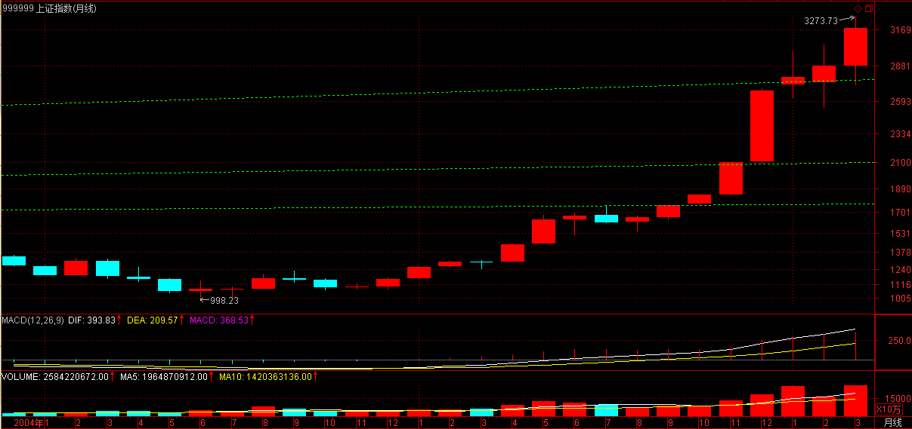

(2007-03-27 12:53:22)
投资，往往碰到这样两难的事情，就是一个小级别的进入，结果出现大级别的上涨，这时候怎么办？
【韶山映山红】“小级别的进入”，什么情况算是变成了大级别的上涨？就是小级别走势的重叠或者扩展形成大级别中枢，然后出现大中枢的第三类买点的时候，可以认定是变成了大级别的上涨。还有就是小级别同级别分解构成了大级别线段类走势的情况。】
这时候有两个选择：
一、继续按小级别操作，这样的代价是相当累，【韶山映山红】小级别买点切入，遭遇了大级别上涨，意味着遇到了中枢延伸升级或者扩张扩展升级，原级别的走势就复杂化了，所以继续原操作级别就会“相当累”。】而且小级别操作的问题是对精确度要求比大级别高，而且资金容纳程度低；【韶山映山红】如果嫌对精确度的要求高，开始干嘛选这样的级别？累是真的，挣钱应该更多。资金容纳问题是真的，但是对我们一般的小散没有什么影响。】
二、升级为大级别操作基础上部分保持小级别操作。对于资金比较大的投资，后者是比较实用的。【韶山映山红】部分仓位保持小级别操作，对一般资金也是一个很好的选择，既保证收益率，也保证安全性，还保证警觉性。】
【韶山映山红】这里有个问题：既然是多级别联立，那么操作级别的高级别本来就在分析范围内，】
上节中的“Ai与Ai+2之间盘整背驰”，将演化出“当i为偶Ai+3跌破Ai高点”或“i为奇数Ai+3升破Ai低点”；因而相应演化出高一级别的中枢，例如在该例子里，Ai+1、Ai+2、Ai+3就是30分钟的中枢，而所有更大的中枢，当然是先有高一级别才可能有，否则连30分钟的中枢都没有，哪里来日、周、月的？但这个现象就保证了，在同级别分解下，一个小级别的操作是可以按一个自动模式换档成一个高级别的操作。
【韶山映山红】“按一个自动模式换档成一个高级别的操作”：原来是线段间盘整背驰判断的操作，形成中枢后，切换到中枢级别的操作，也就是说，等中枢级别的背驰再出，或者小转大之后的三卖再出。原来的操作变成了参与中枢震荡的操作。】
【韶山映山红】非同级别分解的情况，小级别操作也可以自动换挡成高级别操作吗？以后研究。】
一般情况下，在上面5分钟同级别分解的例子中，只要从A0开始到某个At，使得A0+A1+….+At=B1+B2，后者是30分钟级别的同级别分解，这时候就可以继续按后一种分解进行相应的操作。【韶山映山红】同级别分解的多重赋格，不是自然生长的30分钟走势，而是用同级别分解划分出来的5分钟走势去组合30分钟走势。★以后研究。】
【韶山映山红】这里“A0+A1+….+At=B1+B2”，高级别的同级别分解不是从B0开始，而是从B1开始。这意味着什么？★以后研究。】
当然，是否换档成后一种级别的操作，与你的时间、操作风格、资金规模有关。但本ID还是建议，可以进行这种短线变中线的操作，即使你的资金量很小，但如果出现一种明显的大级别走好，这种操作会让你获得稳定的大级别波动利益，因此，根据当下的情况去决定是否换档，就如同开车时根据路况等决定档位一样。【韶山映山红】同级别分解的机械操作法，可以理解为线段类走势的操作。当该级别线段构成高级别中枢的时候，就可以站在高级别的角度分析走势。原级别的操作减少仓位、变成打短差，也就实现了自动换挡。】
对于大资金来说，这种级别的操作可以一直延伸下去，可以变成N重层次的操作，每一重都对应着一定的资金与筹码，而相应对应着不同的节奏与波动。
如果对古典音乐有点了解的，就知道，这如同赋格曲，简单的动机、旋律在N个层次上根据不同的转位、移位、对位等原则运动着，合成统一的乐曲。
市场的走势，其实就是这样的多重赋格，看似复杂，其实脉络清晰，可以有机地统一在多层次的同级别分解操作中。
【韶山映山红】百度百科：赋格是盛行于巴洛克时期的一种复调音乐体裁，又称“遁走曲”，意为追逐、遁走。赋格的结构与写法比较规范。乐曲开始时，以单声部形式贯穿全曲的主要音乐素材称为"主题",与主题形成对位关系的称为"对题".之后该主题及对题可以在不同声部中轮流出现，主题与主题之间也常有过渡性的乐句作音乐的对比。】
在这种同级别分解的多重赋格操作中，可以在任何级别上进行操作，而且都遵守该级别的分解节奏与波动，只是在不同级别中投入的筹码与资金不同而已。对于大资金所具有的整体筹码与资金来说，就永远在一种有活动的多重赋格，实际的市场操作，成了一首美妙的乐曲演奏，能应和上的知音，就能得到最大的利益与享受。而每一层次的操作都是独立又在一个整体的操作中，对这种操作如果没有什么直观感觉，那就去听听巴赫的音乐，那不仅是音乐的圣经，对股票的操作同样有益。【韶山映山红】同级别分解的多重赋格操作的特别之处，就是每一个级别都是同级别分解。★以后研究。】
下午收盘后有一个重要的谈判，不能上来，先把帖子发了。
早上已经击退汉奸的一次进攻，下午，还会折腾，只要板块继续轮动，银行股能保持低姿态，汉奸就没有大机会。
先下，再见。
2007-3-27 12:57
下午收盘后有一个重要的谈判，不能上来，先把帖子发了。
早上已经击退汉奸的一次进攻，下午，还会折腾，只要板块继续轮动，银行股能保持低姿态，汉奸就没有大机会。
先下，再见。晚上九点再上来。
2007-3-27 12:57
对不起，来晚了
2007-3-27 21:20
大盘今天走势继续呈现多空拉锯，目前正在一个敏感的时间之窗，前次高点21天前后，而突破前期高点连线，对于很多所谓技术派的人，还有三天的确认要求，因此市场难免犹豫。本周余下三天，关系到月线的收盘，因此激烈的争斗、震荡不可避免。
但由于目前启动的二线股都有比较强的业绩等支持，比前期三线股的要稳健，而银行股的低调又使得汉奸打压无处发力，这就是最近汉奸比较痛苦的地方。
目前多头一定要耐心，用文火熬，才能把汉奸煮烂，否则汉奸的脸皮这么厚，大火没用。
个股不多说了，反正还是那些，如果技术好的找好买卖点，不行的就看均线系统，如果5日线都不破，就拿着，这样省心、不用一惊一乍。
2007-3-27 21:29
[匿名] 瞎鼓捣 2007-03-27 21:24:33
老大好,
记得你曾经说过MACD判断备驰只是起到辅助作用,如果不用MACD的话该如何判断备驰呢?
==
看均线系统也行，短期均线与长期均线的面积比较就可以。
还有很多方法，道理都一样。
2007-3-27 21:31
[匿名] 戈石 2007-03-27 21:30:12
女王好！！！
好像没开过巴赫的音乐会，什么时候来一场？有巴赫《无伴奏大提琴组曲》吗？
==
可以，就本周
2007-3-27 21:33
[匿名] 新手 2007-03-27 21:31:21
缠妹妹对今天大盘在13：38分的处没有形成背驰而上涨有何看法，我今天全部做空了，没有跌，因为也没发现底背，在低位也没有补回，后来全涨了又觉得可惜，所以追高买回来了，象这个时候应该怎样操作？
你对600961和600713怎么看，后市还可以看好吗，600961是不是一个30分钟的三买。学艺不精，请多指点，谢谢！
==
今天是一个标准的平衡市，就是围绕一个中枢在震荡，哪里存在上涨？
【韶山映山红】围绕一个中枢震荡的走势就叫平衡市。这里是第一次提出平衡市的概念，后面的《教你炒股票46：每日走势的分类》详细述说了一天走势的分类情况。】
背驰不是这样用的。站在中枢震荡的角度，下午没创新低，就证明这向下的力度没有上午强，那当然就要拉回去。所以应该先把理论搞清楚。【韶山映山红】下午向下的那个尖角没有比上午的那个尖角更低，而且两个向下还没有背驰，保持不动。其实加上前一日的那个向下尖角，三个都一样的判断。】
至于你说那两只股票，中线都可以。
【韶山映山红】600961株冶火炬，2007-05-29变更为株冶集团。】
【韶山映山红】600713南京医药。】
2007-3-27 21:41
风冷清秋 2007-03-27 21:25:01
姐姐好,问个问题,你选择股票除了走势\消息,还看不看其他,我的意思是比如说938,业绩亏损,到该公司的网页上看看,搞科技的上市公司,网页做得之烂,还有卖的也是电脑城的产品,真是看了都担心?【韶山映山红】000938紫光股份。】
==
看看现在是哪个学校在领导中国？【韶山映山红】清华大学，胡锦涛。】
在中国，技术又算得了什么？任何事情都不能脱离当下，连股票走势都是当下的。
2007-3-27 21:49
[匿名] 草草 2007-03-27 21:48:02
老师能讲讲什么时间之窗的课程吗？这个东西听了好多次，报纸也看过，都神秘兮兮。不知道以后老师能不能扫扫盲！！！！！
==
都是一些辅助的东西，先把基础框架弄好，才可能装修。
2007-3-27 21:52
[匿名] 新浪网友 2007-03-27 21:50:15
mm好。报到。我老是顶处理不好。有无好办法。
==
不熟悉的，宁愿卖早，别卖晚。
2007-3-27 21:53
北纬36度54 2007-03-27 21:39:00
请教禅主:
三买后的反转力度确认主要要结全哪几个方面来判断?
1,一买后次级回抽不破中枢,是不是回抽的幅度越小越强?
2.如果是一个.次.次.级.反转突破最近一个下跌中枢是不是强势的表现?
谢谢!
==
离开中枢的回抽的力度越小，后面可以期待越高。【韶山映山红】离开返回的三种形式：盘整+反趋势、趋势+反趋势、趋势+盘整，回抽的力度最小的是趋势+盘整。】
至于形态上，比较复杂，以后会说到。
2007-3-27 21:57
[匿名] 首钢股份 2007-03-27 21:56:00
女王能否回答我昨天的问题：
[匿名] 首钢股份
那我问一个：女王认为像我们这样的低收入低投入者（约10－20万之间），中线投资（当然留出20％短差），是每个板块选择一只股票分散投资，还是重仓投入一只好？
我目前持有的是600008、000683、000959、600526，您受累给点意见。
==
如果每个板块，一只足够，之所以不敢集中，是因为没把握。【韶山映山红】不能把资金都集中在某个板块的若干个股。】而要进步，就一定不断强迫自己更精细地分析，提高把握性，这样才能进步。
一般，资金不大的，最多两、三个板块持股就可以，这样在轮动时可以互相照应。【韶山映山红】小资金只做两三个股票，而且是不同板块的。既降低风险，又能做轮动。】
那四只股票中线还行。
【韶山映山红】600008首创股份。】
【韶山映山红】000683天然碱，2007-09-06变更为远兴能源。】
【韶山映山红】000959首钢股份。】
【韶山映山红】600526菲达环保。】
2007-3-27 22:02
[匿名] 台湾局势 2007-03-27 22:00:03
缠mm，好
不知道你对台湾局势怎么看法？是否会发生战争？
台湾当局在独立的道路上越走越远，中国政府不会坐视不管，任其走下去。相对国家的最高利益，政府是否会牺牲股市的长远发展？
==
这就像一个中枢震荡，向上突破代表和平统一，向下突破代表战争统一，问题是出现第三类买点还是卖点。而这个买卖点是当下的，是合力的结果，预测这些没意义，因为不可预测。唯一可以断定的是，只要有第三类买卖点，目前的中枢震荡一定结束。
【韶山映山红】“他敢!我今天把话撂在这，美国在台湾部署萨德之日，就是解放军解放台湾之时!不光是萨德，包括F35之类的进攻性武器，他敢在台湾落地!”南京军区副司令王洪光中将。2017-03-07。】
【韶山映山红】“我告诉你，美国军舰抵达高雄之日，就是我解放军武力统一台湾之时。”中国驻美公使李克新。2017-12-08。】
2007-3-27 22:05
[匿名] 晚安 2007-03-27 22:00:00
但由于目前启动的二线股都有比较强的业绩等支持，比前期三线股的要稳健，而银行股的低调又使得汉奸打压无处发力，这就是最近汉奸比较痛苦的地方。
-----------
老师,有一点不明白,既然汗奸重仓银行股,打压无处发力,为什麽不反手上拉呢?他不想挣钱吗?还能就这样半空中挂着,光腚上吊似的,丢人现眼?
==
如果你基本都是银行股，你拉起来干什么？让二、三线股的人出货？学雷锋？【韶山映山红】相当于拉指数掩护出货。】
汉奸节奏错了，想改变，没门了，今年二、三股的大行情和他们没关系了。别说汉奸了，那些空头，元旦开始就喊着回到2200的，今年的行情和他们有关系吗？
等空头翻多，行情就非如此的行情了。
2007-3-27 22:10
[匿名] 快乐VS菜虫 2007-03-27 22:08:25
看了昨天缠姐关于房产的回贴，我着实有点糊涂了，所以特地再次请教一下。
缠姐之前的关于房产的文章我看了，就是说房市要股市化，既然股市是没有只涨不跌的，那房市怎么可能不跌呢，如果不跌还叫股市化吗？
==
那是一个比喻，是用以前的股市监管的无力来比喻现在房产监管的无力。因为，在很长时间，股市是一个贬义词，其实在现在，很多人还有这种想法，不信，去问问70岁以上的经济雪茄们。
2007-3-27 22:14
10点多了，对不起，一定要下，子时之前一定要睡觉。
再见。
2007-3-27 22:17
(2007-03-28 15:22:50)
十八
“支点，世界了撬动。没有杠杆，撬动支点世界。虚妄的支点、虚妄的世界、虚妄的杠杆、虚妄的撬动、虚妄的虚妄，支点虚妄支点、世界虚妄世界、杠杆虚妄杠杆、撬动虚妄撬动、虚妄虚妄虚妄。支点世界的撬动，没有杠杆。
永恒的天空上，两群不死的鸟儿演绎永恒。不死延异，虚妄天空永恒的演绎。天空没有支点，支点没有世界，世界没有天空。支点世界世界，世界支点支点。没有支点的天空，没有世界；没有天空的世界，没有支点。没有世界的支点，没有永恒。
所有的光，引向更深的黑，永恒走不出永恒，世界走不出世界，支点走不出支点，天空走不出天空。两群不死的鸟儿，尸体横陈；一抹残光，天空剥落。更黑的深深深深几许，几许问天天不语，楼高不见章台路，独自怎生得黑？”
窗外，没有看风景的人，只有不死的车流冲刷着城市的夕阳。
十九
夕阳，颠簸在城市风景里，粉碎在城市礁石间，一片片，带着城市坠入，落花般堆积在这有着神秘名字的五星级酒店依然松软的枕上。
“你的声音很浑厚。”
书桌上，红绿变幻，蛇舌般的曲线无声地延伸。
“你喜欢浑厚的声音？”
“当然，还有发出浑厚声音的身体。”
蛇舌般的曲线，依然在书桌上晃动。
“你很直接。”
“没有曲接，只能直接。”
“啥时走？”
“明天。”
书桌上的蛇舌一闪一闪。
“这是故事的开始还是结束？”
“事都没事，哪有故事？”
“还要考试？”
“愿意移库还是路考？”
“晚上冷，就别路考了。”
“好的，我在大堂吧等你。”
“能留下电话吗？”
“不能彼此发现，留电话何用？”
“行，半小时到。”
窗外，最后一缕光，蛇舌般闪动。
（待续）
汉奸越来越听话，具体的细节就不说了，这里耳目可众多。
经过今天的震荡，那条线已经第二天站稳，那些非汉奸的空头是否要投降，自己看着办吧。
当然，汉奸还有机会，如果换着本ID来做空，现在肯定已经3000以下了，可惜汉奸技术比较差，期货一开，汉奸这种水平，怎么玩呀。别输得内裤都没了，漂洋过海到汉奸他爸那里裸奔就不好了。
最后两天，关系到月线，还关系到季线收盘，看K线图的都知道，一个光头阳线与带长上影的对下月、下季走势的影响，所以这两天虽然短，但却十分重要。这两天走好了，空头翻多的力量会越来越大。

个股就不用说了，今天不说唾液，只说体液。
2007-3-28 15:24
对不起，10分钟后要谈一件事，估计14:30能完，到时候再上来。
先下，再见。
2007-3-28 15:27
严重对不起，事情刚谈完。但马上要出去，只能晚上9点上来。
9点再来，对不起，先下。
2007-3-28 17:15
匿名] 新年好 2007-03-28 15:27:00
缠姐好！
检讨一下这两天的操作，比较失败，节奏把握不住。上午11：20那个低点根本没任何背驰迹象，怎么就上去了
==
1分钟以下级别的，比较1分钟MACD的柱子面积就可以。前面是有两个绿柱子面积之和，后面是1个，【韶山映山红】像这样的面积比较，实在看不出那前两个怎么就比后一个的面积大。用最蠢的办法，把MACD的数值求和，（78.529 + 32.531）＞（97.285）。】这是恐慌性假突破中经常看到。【韶山映山红】恐慌性假突破。可以做个专题。以后研究。】
另外，用中枢震荡的角度就更简单。
不过，这都不是最重要的，最重要是节奏，如果早上5分钟明显的顶背驰能先卖出，那么下面的回补，早点晚点都不是最重要的。
而且，个股方面就更明显，例如000802，1分钟上破15元后，那底背驰就是最明显的了。【韶山映山红】000802北京旅游，2014.10.24变更为北京文化。】
2007-3-28 21:13
[匿名] 百思不解 2007-03-28 15:33:59
搂主好！
关于背驰有两个细节问题请教：
17课：“没有趋势，没有背驰；背驰是前后趋势间的比较，也就是说，在同一级别图上存在两段同方向的趋势是出现背驰的前提”。
24课：“用MACD判断背驰，首先要有两段同向的趋势。同向趋势之间一定有一个盘整或反向趋势连接，把这三段分别称为A、B、C段。显然，B的中枢级别比A、C里的中枢级别都要大，否则A、B、C就连成一个大的趋势或大的中枢了。A段之前，一定是和B同级别或更大级别的一个中枢”。
37课：“没有趋势，没有背驰；不是任何a+A+b+B+c形式的都有背驰的。当说a+A+b+B+c中有背驰时，首先要a+A+b+B+c是一个趋势。而一个趋势，就意味着A、B是同级别的中枢。其次，c必然是次级别的。而b是有可能小于次级别的，力度最大的就是连续的缺口，也就是说，b在级别上是不能大于c的”。
――
以上是我从原文中摘录的内容，关于背驰有两个细节问题似乎矛盾。
1、 当说a+A+b+B+c中有背驰时，从37课叙述看，b可以小于次级别？那就是说，b不一定是与c同级的趋势，这与17课和24课的描述有矛盾。
2、 24课描述中有“A段之前，一定是和B同级别或更大级别的一个中枢”，那对a+A+b+B+c来说，如果A中枢可以是比B中枢级别高，而b、c满足其他背驰条件时，也可以是标准背驰吗？
==
这没有什么矛盾的，如果按最标准的背驰，就是在趋势中两段小级别趋势的比较。
而这两段走势的比较，可以推广开。例如，在中枢震荡中，甚至同时向上的两段都可以用类似背驰的方法来比较。这就是背驰方法的推广。
2007-3-28 21:20
[匿名] 迷糊 2007-03-28 15:35:40
看来大家跌的心情都不好 技术不好问题也少了
MM 按你说的如果汉奸手上的银行 如果有了缠论的买卖点 要不要执行啊 是不是因为你和他们的战斗 就不看那些了
今天汉奸拉银行是什么目的 他们不是不想给二线股出货的机会吗
银行的下一步是什么呢 迷惑了 请析释
==
为什么早上拉的和下午拉的一定是同一批人？为什么早上砸的人下午不能回补弄差价？
早上是纯粹捣乱的，深圳不跟着，就知道这种捣乱是没意义的。具体细节就不说了。
事情总没有想象那么简单。就算是市场主力，其行为也是不同的，那样认为市场有一个总庄家的想法是很无聊的。
2007-3-28 21:25
[匿名] 内丹 2007-03-28 15:42:57
大姐，这是个纵欲的年代，你还是多写些清心寡欲的文章，挽救一个人心！
还是喜欢看你的经济方面的文章！
==
见欲为欲，欲也；见欲不为欲，欲也。烦恼菩提不二，谁欲谁不欲？
2007-3-28 21:28
[匿名] 凤羽 2007-03-28 16:05:10
老师好，今天没买也没卖，只是看大盘，感觉和上一次的V形反转挺象的，但用MACD看,上次一分钟背弛明显，这次却很多人都没看出就上去了，从下跌力度看最后一跌力度也明显比前面下跌大，所以不明白就只好看了，还有人说从分时上看一分一下底背了，老师也说过这种方法，如果最低看一分钟线的，如何从分时看一分一下底背呢？
我发现只要愿意帮帮散户和普通百姓的都会受到或多或少的攻击，希望这个社会越来越和谐，正义永远战胜邪恶！！！永远支持老师！！
==
上面说了，辅助可光看1分钟MACD的面积之和比较。
2007-3-28 21:31
[匿名] 凤羽 2007-03-28 16:05:10
老师好，今天没买也没卖，只是看大盘，感觉和上一次的V形反转挺象的，但用MACD看,上次一分钟背弛明显，这次却很多人都没看出就上去了，从下跌力度看最后一跌力度也明显比前面下跌大，所以不明白就只好看了，还有人说从分时上看一分一下底背了，老师也说过这种方法，如果最低看一分钟线的，如何从分时看一分一下底背呢？
我发现只要愿意帮帮散户和普通百姓的都会受到或多或少的攻击，希望这个社会越来越和谐，正义永远战胜邪恶！！！永远支持老师！！
==
上面说了，辅助可光看1分钟MACD的面积之和比较。
正义和保护谁以及胜利都没有什么必然关系，思维不能陷入这种模式，特别在市场里，太害人。
2007-3-28 21:33
[匿名] 问禅 2007-03-28 21:23:06
请教禅主，百思不得其解，就是如果定下30分钟为操作级别，当下1分K图出现背驰，怎么才能确定，参与还是不参与，判断依据是什么？常常搞错，谢谢了
==
关键要看5、30分钟当下在走什么，如果正在主跌段中，当然没必要参与。
2007-3-28 21:40
[匿名] 无香 2007-03-28 15:39:46
无意中发现这里~已经习惯天天来学习下~不知您对基金怎么看?
==
基金这种模式是有很大弱点的，特别在一个心态浮动的市场里，基金被阻击而清盘的可能性是很大的。
市场最安全的资金，就是稳定、长期，没有套现压力的，显然，基金并不符合。
2007-3-28 21:45
对不起，太晚，要下了。
补充一句，节奏是最重要的，操作，归根结底就是买点买、卖点卖。能否做到，那是技术精确度问题，这个通过实践，一定会不断提高，所谓熟能生巧。但如果这基本的节奏都把握不住，那是越实践毛病越多，这是一定要记住的。
下了，再见。
2007-3-28 21:54
(2007-03-29 12:39:50)
从某种程度上说，货币不过是一个交易的凭证，一种最基础的具有某种股票性质的东西。就像实质上只是废纸的股票，可以用所谓的基本面编织出一幅泡沫的图画，货币也一样，只不过是那赤裸裸的资本主义生产关系的皇帝新衣。货币所遮盖的，就是这样一种血腥的关系，里面充满着压迫与奴役。
任何货币的确立，都以对某种奴役与压迫的社会关系的承认为前提。当你用劳动去换取货币时，只不过是在以承认这种雇佣劳动的所谓合法性为前提。所谓资本主义社会的合法，本质上不过是这种奴役与压迫的社会关系面首法则所立的贞洁牌坊。在一个虚拟化的资本主义社会里，一切虚拟化的游戏，例如股票市场，用各种本质是废纸的玩意来玩弄货币转移的游戏，而货币同样不过是一种以承认资本主义压迫关系为前提的废纸，这里是双重的虚幻、双重的压迫。
而国与国之间货币的游戏，本质上不过是这种资本主义虚拟化游戏的群交化，最终还是那资本主义生产关系的幻影，但这幻影是吸血的幽灵，它吸取的是所有人的灵魂、血肉与生存。所有资本主义社会里的人，其实都在这吸血幽灵的蚕食中乐此不疲，消费主义的泛滥成就这物欲的狂欢，问题不是这狂欢是否符合所谓的道德标准，而是这狂欢的无限扩展不可避免地以一个无限可能的上帝式假设为前提。
而现实中，无限只能被虚拟，消费化在虚拟中被无限，但却永远改变不了这无限的幻梦不过依然在一个有限的蚁槐之中。对着一个无处不在的幻影，咒骂、打倒是没用的，只能以幻制幻，在这幻影之中生出无穷的纠缠，让欲望更欲望，让血腥更血腥、让压迫更压迫、让奴役更奴役，让资本主义的摇头丸、迷幻药无限地泛滥，这样，即使有梦破的一天，依然在梦中。
所有垃圾西方经济学，企图用所谓的公式、法则的迷幻还掩盖资本主义生产关系的现实，让所谓定律的虚幻真实来掩盖现实，并把这些所谓定律虚幻的逻辑起点一同掩盖。摧毁他们，就要直接挖出他们所有理论的逻辑起点，让其虚幻性在现实中破裂。更重要的是，这种以虚幻逻辑构造的谎话，却又成为现实社会中真实的上层建筑话语在编制世界的所谓真实。这种被资本主义上层建筑话语所编制的现实关系，构成了这资本主义迷幻最基础的部分。从现实出发，不是以现实为起点，而是要揭示现实起点的荒谬性、虚幻性，这才是真正的从现实出发。
货币的虚幻构造了虚幻的货币现实，当你打破被货币所交易的虚幻是不足够的，那不过是幻影的第三重幻影，要捣毁的是那第一种的幻影，那资本主义现实社会关系的本身，不如此，一切都是瞎掰。
附录
【韶山映山红】附录时间2007-3-29 21:44。】
今天的争斗对于散户来说，确实是一个心理考验，但这是必须的。对于本ID来说，正如中午所说，对金融股先买后卖是唯一正确的选择。汉奸这一招本在预计之中，也是汉奸唯一能使用的招数。如果汉奸连今天这一招都使不出来，本ID会更加蔑视他们。
汉奸要阻击上涨，唯一的途径就是昨天说的，让月、季留下长上影，关于最后这两天的斗争，本ID已经提前预告。大部队打仗，伤及无辜，那是没办法的事情。明天是最后一天，汉奸当然希望就势打出长阴，其实，无论什么走势，对于本ID来说都无所谓，因为本ID今天采取了最正确的策略，先买后卖金融股，同时从昨天起对二、三线股进行清洗。对于本ID来说，明天以静制动，先让汉奸出手，大不了再来一次如3000点下的反复震荡，这种活动，汉奸们已经输过一次，不妨再来一次。
现在，争夺的市场控制权，丧失筹码不行，唯一正确的就是通过震荡把筹码成本降低，由此可见，本ID理论，其实对大资金一样有效。股票都是废纸，只是吸血凭证，关键是能本成本降低为0才是真正的安全，0以下的，才是真正的利润，才是真正的血。无论散户还是主力，这都是一样的。
下午收盘有事，不能上来，先说两句。
这两天关系月、季收盘，激烈的争斗本在计划中。今天出现如此走势，就是这种争斗的结果。打不下去，先拉起来，这也是汉奸唯一的途径，如果换了本ID，也会这样。对银行股不可能压盘，本ID不可能在今天去压制中行，只可能顺势而为，先买后卖也是对的。
当然，大盘股打仗，其他股票就要受累，这是不可避免的，市场不是慈善场所，如果看不懂的，就看深圳指数，以此为进出，上海指数在这段时间的失真是不可避免的。个股要习惯根据个股本身的图形进出，特别股指期货出来后，指数对个股的指导意义更弱。
对于本ID来说，中行、联通就是其中的组合而已。等大盘股的争斗有方向了，其他股票自然重新走好，其实，完全可以以板块轮动来看。
晚上9点再来，再见。
2007-3-29 12:41
对不起，来晚了。
2007-3-29 21:31
今天的争斗对于散户来说，确实是一个心理考验，但这是必须的。对于本ID来说，正如中午所说，对金融股先买后卖是唯一正确的选择。汉奸这一招本在预计之中，也是汉奸唯一能使用的招数。如果汉奸连今天这一招都使不出来，本ID会更加蔑视他们。
汉奸要阻击上涨，唯一的途径就是昨天说的，让月、季留下长上影，关于最后这两天的斗争，本ID已经提前预告。大部队打仗，伤及无辜，那是没办法的事情。明天是最后一天，汉奸当然希望就势打出长阴，其实，无论什么走势，对于本ID来说都无所谓，因为本ID今天采取了最正确的策略，先买后卖金融股，同时从昨天起对二、三线股进行清洗。对于本ID来说，明天以静制动，先让汉奸出手，大不了再来一次如3000点下的反复震荡，这种活动，汉奸们已经输过一次，不妨再来一次。
现在，争夺的市场控制权，丧失筹码不行，唯一正确的就是通过震荡把筹码成本降低，由此可见，本ID理论，其实对大资金一样有效。股票都是废纸，只是吸血凭证，关键是能本成本降低为0才是真正的安全，0以下的，才是真正的利润，才是真正的血。无论散户还是主力，这都是一样的。
2007-3-29 21:44
突然进不来，有点奇怪，各位可好？
2007-3-29 21:57
[匿名] 新浪网友 2007-03-29 21:52:03
照妹妹的意思，明天是一场血战，大盘明天有可能会大跌？
==
不排除这种可能，特别如果是本ID来做空，明天是最好的机会，一个长上影K线后，拉一条长阴，至少可以让很多所谓的技术派痛苦半个月。当然，汉奸有没有这本事是另外的事，市场不是一个人、一个派别的市场，而且市场的走势，很多都是当下发生的，这如同打仗，战机难道能预先知道吗？像今天，汉奸突然发疯，这时候如果去压盘，那就傻了，而是要比汉奸更疯，而当汉奸想回砸时比他砸得更快，这就如同剑客过招，错一步就是万劫不复。里面的工夫深着，哪里有这么简单。
2007-3-29 22:06
[匿名] 新浪网友 2007-03-29 21:58:43
999还有希望吗?
==
999是某汉奸基金在出货，【韶山映山红】000999三九医药，2010.02.24变更为华润三九。】
该汉奸基金，在几元时拿了5000万股，11元上下被赎回，出了2000万，然后这次想出清，换600607，该股票也是该汉奸基金的重仓股票。【韶山映山红】600607上实医药，2010年2月3日被上海医药601607吸收合并。】
本ID从来都是顺势而为，别人砸，想让本ID接，门都没有，你想出，可以，低出吧。
2007-3-29 22:11
[匿名] 漂泊 2007-03-29 22:09:26
禅主，您给说说600238，已经底背驰了，昨天进的，怎么还是被套了那
【韶山映山红】600238海南椰岛。】
==
不明白级别，永远也不可能真正明白市场，先想清楚是什么级别的背驰。【韶山映山红】前一天是1分钟以下级别。这一天才是线段类盘整背驰。后来就反转了。】
2007-3-29 22:14
[匿名] 麒麟 2007-03-29 22:05:02
同时从昨天起对二、三线股进行清洗???二线蓝筹近期还有戏吗?我是刚换到这个板块的,刚冲了一下,就给套住了.妹妹辛苦了!
==
只要不是过度炒作的题材股，当然没有问题。
不过请注意，任何被套的，肯定都不是在买点买的。本ID反复强调过，心态最重要。很多人，明明知道不是买点，就是手痒忍不住，这就是心态问题，不解决这个，任何理论都没用。
股票只有两种，买点上的股票都是好股票，否则就是垃圾股票。
大级别买点的就是最好的绩优股，耐心等待股票成为真正的绩优股，这才是真正的心态。
2007-3-29 22:20
[匿名] 波波 2007-03-29 22:09:35
那仙女姐姐,我们手里的股票怎么办啊
没有金融股票啊
==
这种心态，怎么在市场上生存。
本ID大张旗鼓地介入中行、联通，如果你真喜欢这种股票的，你早就拥有。
【韶山映山红】601988中国银行。】

【韶山映山红】600050中国联通。】

这些股票，本质上根本不适合散户，因为波动太小，没什么意义。
本ID说10元附近的二线股，像000802，难道中行、联通最近还能和他比？
【韶山映山红】000802北京旅游，2014.10.24变更为北京文化。】
先把心态放好，关键不是什么股票，而是买点与卖点，例如，即使是000802，17元上买，至少在这两天就是垃圾股，卖点买点才是最重要的。
2007-3-29 22:26
[匿名] 摇篮 2007-03-29 22:25:35
缠主，那对手下次不是反过来阻击你？
==
只要你能按照节奏来，没有人能阻击你。像中行、联通，汉奸怎么阻击？本ID筹码不少，成本越来越低，他阻击什么？汉奸有本事就阻击上10元，本ID全部给他们。砸就更没用，你问问他们，今天的高位他们能出多少？
【韶山映山红】601988中国银行。】
【韶山映山红】600050中国联通。】
市场是有节奏的，把握当下节奏，没有人能战胜你。
2007-3-29 22:30
[匿名] 新浪网友 2007-03-29 22:21:02
看禅主的意思 ,明天难道要割肉斩仓出局吗?
==
你需要检讨的是，为什么在卖点没卖，而不是去斩什么仓。注意节奏，卖点没卖，活该斩仓，斩在买点，正好瘦身。
那些喜欢逆着市场节奏的人，什么时候变皮包骨了，可以上来广而告之，以此警戒后人。
2007-3-29 22:33
[匿名] 轻风吹断 2007-03-29 22:33:07
博主今天有点激动了。您说过修、养、齐、治、平。
明天还等着您平呢。离子时不远了，早点休息吧。
==
本ID喜欢有点水平的对手，今天，汉奸能采取正确的选择，本ID更高兴，这是做空者唯一正确的选择，不过，他们的时机已经不好，所以，只能算垂死一战。
至于散户，震荡，正是短差最好的机会，先卖后买，先买后卖，根据向下向上段的节奏来，这是市场考验的机会。
2007-3-29 22:37
[匿名] 麒麟 2007-03-29 22:36:56
缠妹妹,问个傻问题,就是砸盘时,买单为什么不撤了啊?为什么还要傻傻地接别人的货啊?
==
那你就要问那些喜欢填买单的人了，本ID从来不这样，对手盘这种无聊玩意，本ID从来不干。
2007-3-29 22:39
[匿名] 粉丝 2007-03-29 22:39:20
楼主,您好!忍不住出来冒个泡,,看来汉奸很清楚楼主的这个BLOG也有心来捣乱,我们很担心真的哪天我们在这里见不着您了,咋办呢?或者又如何再去追随您?
还有一个低级的问题,39我也有大部分仓位,持它的理由因为前面的贴子和对楼主的信任,而今天,楼主却公开地告诉大家汉奸的动向,我的担心又有了(主要是自己分析得不好):假如汉奸出完货了,是不是也意味着楼主也会将它放了呢?---我们更没得希望了呢?
==
就算按跌破5日线减仓这最简单的方法，你看看你该什么时候就出点这股票？且不说16.5高开低走的长阴，做股票不讲技术，怎么可能应付？
当然，如果你真是中长线持有，那就没必要问那么多，去分析这股票的基本面，你看他该在什么位置？
2007-3-29 22:43
必须下了，太晚。
最后给各位一句话。
节奏，永远是市场的节奏，一个没有节奏感的市场参与者，等待他的永远都是折磨，抛开你的贪婪、恐惧，去倾听市场的节奏。
再见。
2007-3-29 22:46
本课目录
教你炒股票40：同级别分解的多重赋格那一夜，他的体液喷了我一身（十八、十九）捍卫马克思6：货币与资本主义社会的三种幻影